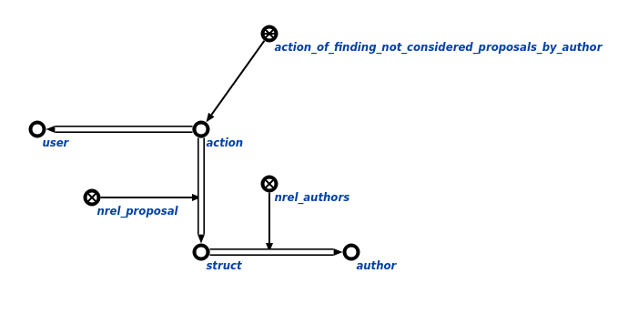

Команда пользовательского интерфейса для поиска всех нерассмотренных предложений конкретным разработчиком предназначена для поиска всех нерассмотренных предложений. Единственным аргументом команды является разработчик, для которого необходимо найти все нерассмотренные предложения. Результатом выполнения команды является вывод на экран всех нерассмотренных предложений конкретного разработчикa.
